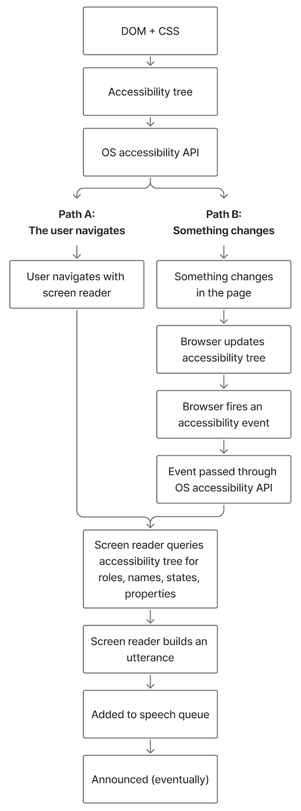

Most screen readers never look at the rendered screen. Instead, they get information from the browser in two ways.
How it starts
- The browser builds an accessibility tree from the DOM (and parts of the CSS). In Chrome's case, it actually builds two of them.
- The browser exposes that tree through the operating system's accessibility API.
Path A: the user navigates with the screen reader
- The user reads or navigates, such as arrowing through content or jumping to the next heading.
- The screen reader queries the tree through the OS accessibility API for the relevant roles, names, states and properties.
Path B: something changes
- When something changes, such as a DOM mutation or focus moving, the browser updates the accessibility tree.
- The browser then fires accessibility events for anything meaningful that changed (AX notifications on macOS, UIA events on Windows).
- These events are passed on through the same OS accessibility API.
- The screen reader receives those events and queries the tree for the relevant roles, names, states and properties.
How it ends (for both paths)
- The screen reader builds "utterances" and adds them to the speech queue. When they're actually announced depends on multiple factors, in a mythical and magical order that sort of makes sense but is far more complex than most people would believe.
This is a simplified version. Every step has its own edge cases, and some of them have edge cases too.
